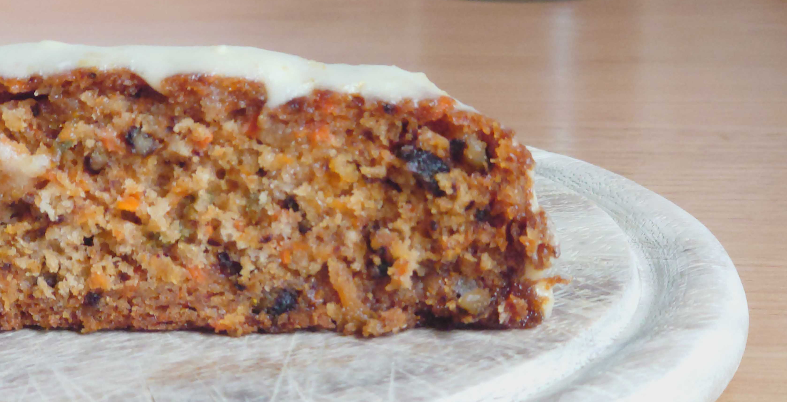

Moehrenkuchen 🥕

Beschreibung
Ein saftiger Moehrenkuchen mit feinem Zimt-Aroma, frischer Orangenschale und fruchtiger Ananas. Durch die geriebenen Moehren bleibt der Kuchen lange locker und feucht. Mit einem cremigen Frischkaese-Frosting wird daraus ein echter Klassiker fuer jede Kaffeetafel.
Zutaten 🛒
Fuer den Kuchen:
- 3 Eier
- 120 ml Pflanzenoel (1/2 Tasse)
- 250 g Mehl (ca. 2 Tassen)
- 200 g Zucker (ca. 1 Tasse)
- 3 TL Backpulver
- 1/2 TL Zimt
- ca. 300 g geriebene Moehren (ca. 3 Tassen)
- 60 g gehackte Walnuesse (optional)
- 1 TL fein geriebene Orangenschale
- 180 ml zerdrueckte Ananas, gut abgetropft (3/4 Tasse)
Fuer das Frischkaese-Frosting:
- 250 g Frischkaese
- 80 g weiche Butter
- 150 g Puderzucker
- 1 TL Vanilleextrakt
- 1-2 TL Zitronensaft
Zubereitung 👨🍳
- Vorbereiten: Backofen auf 180°C Ober-/Unterhitze vorheizen. Eine runde 23-cm-Form einfetten und leicht bemehlen.
- Eier aufschlagen: Eier schaumig und hell aufschlagen, bis die Masse deutlich dicker wird.
- Oel einruehren: Das Oel langsam zur Eiermasse geben und kurz unterruehren.
- Trockene Zutaten: Mehl, Zucker, Backpulver und Zimt mischen und in die Eiermasse sieben. Alles zu einem glatten Teig verruehren.
- Einlagen unterheben: Geriebene Moehren, Walnuesse, Orangenschale und Ananas vorsichtig unterheben.
- Backen: Teig in die Form fuellen und 40-45 Minuten backen. Der Kuchen ist fertig, wenn er bei leichtem Druck zurueckspringt.
- Abkuehlen: Kuchen 10 Minuten in der Form ruhen lassen, dann auf ein Gitter stuerzen und komplett auskuehlen lassen.
- Frosting: Frischkaese, Butter, Puderzucker, Vanille und Zitronensaft cremig ruehren. Auf dem kalten Kuchen verteilen.
Tipps & Tricks 💡
- Saftigkeit: Ananas gut abtropfen lassen, damit der Teig nicht zu feucht wird.
- Feiner Teig: Die Moehren moeglichst fein reiben, dann wird die Krume besonders gleichmaessig.
- Frosting: Erst auf den komplett ausgekuehlten Kuchen geben, sonst laeuft es weg.
- Variation: Walnuesse durch Pekannuesse ersetzen oder ganz weglassen.
- Aufbewahrung: Im Kuehlschrank aufbewahren und vor dem Servieren 15 Minuten bei Raumtemperatur stehen lassen.